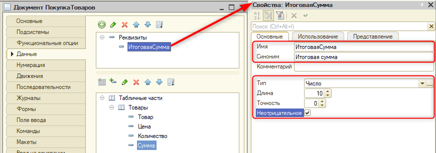

|
Группа без отображения отличается тем, что для нее не выводится заголовок. Она используется, чтобы сгруппировать поля необходимым образом. |
Настройка прикладного решения. Документ "Покупка товаров"
Тема этого занятия – создание двух документов: "Покупка товаров" и "Заказ клиента". Эти документы позволят фиксировать в игре информацию о товарах, которые игрок купил или продал покупателю.
Нам предстоит выполнить 4 задачи:
Документ – это объект конфигурации, позволяющий хранить информацию о событиях, произошедших в организации, например, покупка или продажа товара. |
Начнем с первой задачи и добавим документ "Покупка товаров", который будет отражать приобретение товаров для последующей перепродажи.
Добавим новый документ, нажав по ветке "Документы" правой кнопкой мыши и выбрав "Добавить". Имя документа – "Покупка товаров" (рис. 3.1).
Рис. 3.1. Создание документа "Покупка товаров"
Для определения структуры документа перейдем на вкладку "Данные". Зачастую в рамках одной покупки приобретается сразу несколько разновидностей товаров в разном объеме и по разным ценам. Для решения такой задачи потребуется создать табличную часть.
Табличная часть предназначена для хранения информации, структура которой одинакова, но количество такой информации заранее неизвестно и может отличаться у каждого документа. |
Для того чтобы добавить табличную часть, необходимо нажать на соответствующую кнопку. Укажем имя табличной части – "Товары" (рис. 3.2).
Рис. 3.2. Добавление табличной части "Товары"
Далее необходимо добавить реквизиты табличной части. Их можно добавить с помощью соответствующей кнопки над списком табличных частей, либо нажав по табличной части правой кнопкой мыши и выбрав "Добавить" – "Реквизит табличной части" (рис. 3.3).
Рис. 3.3. Способы добавления нового реквизита табличной части
После добавления нового реквизита должна получиться конструкция в виде диагонали: сначала все табличные части, потом – табличная часть "Товары", далее – "Реквизит1" (рис. 3.4).
Рис. 3.4. Табличная часть "Товары" после добавления реквизита
Далее необходимо настроить реквизит табличной части через палитру свойств. Имя реквизита – "Товар", тип – "СправочникСсылка.Товары" (рис. 3.5).
Рис. 3.5. Настройка реквизита "Товар"
Добавим еще три числовых реквизита: "Цена", "Количество" и "Сумма".
Первый реквизит предназначен для хранения информации о цене товара. Имя реквизита – "Цена", тип – "число", длина – 10, точность – 0, неотрицательное (рис. 3.6).
Рис. 3.6. Добавление реквизита "Цена" в табличную часть
Второй реквизит нужен для хранения информации о количестве товара. Имя реквизита – "Количество", тип – "число", длина – 10, точность – 0, неотрицательное (рис. 3.7).
Рис. 3.7. Добавление реквизита "Количество" в табличную часть
Третий реквизит предназначен для хранения информации о сумме, которую необходимо заплатить за конкретный товар. Имя реквизита – "Сумма", тип – "число", длина – 10, точность – 0, неотрицательное (рис. 3.8).
Рис. 3.8. Добавление реквизита "Сумма" в табличную часть
Поскольку товаров может быть много, и табличная часть может получиться достаточно большой, необходимо создать реквизит на весь документ, который будет хранить итоговую сумму по всему документу.
Добавим новый реквизит в верхней части окна редактирования. Имя реквизита – "Итоговая сумма", тип – "число", длина – 10, точность – 0, неотрицательное (рис. 3.9).

Рис. 3.9. Добавление реквизита "Итоговая сумма"
Обновим конфигурацию базы данных и запустим режим пользователя.
Перейдем к списку документов "Покупка товаров" и создадим новый документ с помощью кнопки "Создать" (рис. 3.10).
Рис. 3.10. Создание нового документа "Покупка товаров"
Документ отличается от справочника тем, что он может проводиться. В рамках документа "Запись" – это планирование события, например, планирование покупки товара через пару дней. "Проведение" – это фиксация того, что событие реально произошло. |
Три кнопки – "Провести и закрыть", "Записать" и "Провести" – могут ввести игрока в заблуждение. В дальнейшем их потребуется переименовать.
Добавим новую строку табличной части с помощью кнопки "Добавить" и выберем товар для покупки, например, "Мятный шарик" (рис. 3.11).
Рис. 3.11. Заполнение табличной части "Товары"
Помимо кнопок, в дальнейшем мы изменим отображение полей и настроим программную логику для работы с табличной частью, поскольку сейчас при заполнении информации о покупаемом товаре система не считывает стоимость товара и не подставляет ее в колонку "Цена".
Кроме того, необходимо реализовать автоматический подсчет суммы, если заполнены цена и количество.
Заполним строку табличной части, указав цену на товар – 10, а количество – 1 (рис. 3.12).
Рис. 3.12. Заполнение колонок "Цена" и "Количество" табличной части "Товары"
Сумма за покупку этого товара – 10, но на текущий момент мы еще не прописали алгоритм для автоматического расчета суммы, поэтому колонка осталась пустой.
Также необходимо реализовать автоматический подсчет итоговой суммы по всему документу, поскольку товарных позиций в табличной части может быть очень много.
Например, добавим новую строку табличной части с товаром "Сухой корм" по цене 50 в количестве 2 штук (рис. 3.13). Пока что все данные вводятся вручную.
Рис. 3.13. Добавление новой строки в табличную часть "Товары"
Заполним колонку "Сумма" в обеих строках табличной части и поле "Итоговая сумма". В первой строке сумма – 10, во второй – 100, итоговая сумма – 110 (рис. 3.14). Всю внесенную информацию необходимо сохранить с помощью кнопки "Записать".
Рис. 3.14. Заполнение полей в документе "Покупка товаров"
Вторая задача сводится к тому, чтобы реализовать автоматический подсчет и поменять отображение полей. Для ее реализации потребуется создать форму.
Закроем режим пользователя и перейдем в конфигуратор.
Чтобы создать новую форму, перейдем на вкладку "Формы" в окне редактирования документа "Покупка товаров" и нажмем на лупу в поле "Форма документа" (рис. 3.15).
Рис. 3.15. Вкладка "Формы"
Форма документа будет основной, об этом говорит галочка "Назначить форму основной", следовательно, она будет использоваться по умолчанию при открытии формы любого из документов "Покупка товаров".
Далее нажимаем на кнопку "Готово" (рис. 3.16).
Рис. 3.16. Работа в конструкторе формы документа
В результате открывается редактор формы, в котором и будет происходить дальнейшая работа.
Для начала изменим отображение кнопок, так как понятия "Провести и закрыть", "Записать" и "Провести" могут смутить и запутать игрока.
Для того чтобы определить набор кнопок самостоятельно, обратимся к "Командной панели" и уберем в палитре свойств галочку у свойства "Автозаполнение" (рис. 3.17).
Рис. 3.17. Отключение автозаполнения командной панели
Теперь можно самостоятельно определить набор команд для командной панели.
Для этого необходимо обратиться к разделу "Команды", в котором нужно выбрать раздел "Стандартные команды". Далее нажмем на плюсик напротив группировки "Форма" и перенесем события "Провести и закрыть" и "Записать" в командную панель (рис. 3.18).
Рис. 3.18. Добавление команд на форму
Отлично! Интерфейс начинает меняться.
Но названия команд "Провести и закрыть" и "Записать" остались прежними. Изменим отображение этих кнопок в интерфейсе.
Для начала обратимся к кнопке "Провести и закрыть" и изменим имя и заголовок команды в палитре свойств на "Купить". Кроме того, необходимо выделить цветом эту кнопку. Это можно сделать с помощью свойства "КнопкаПоУмолчанию" (рис. 3.19).
Рис. 3.19. Изменение кнопки "Провести и закрыть"
У второй команды заменим имя на "ЗапланироватьПокупку", поскольку запись – это планирование события. В качестве заголовка укажем – "Запланировать покупку" (рис. 3.20).
Рис. 3.20. Изменение кнопки "Записать"
Продолжим работу с элементами формы и определим красивую шапку для документа, которая будет состоять из стандартных реквизитов документа – "Номер" и "Дата".
Разместим "Номер" и "Дату" в одну строку. Для реализации такого расположения необходимо создать группу с горизонтальным отображением.
Нажмем правой кнопкой мыши по элементу "Номер" и выберем пункт "Добавить" в появившемся списке (рис. 3.21).
Рис. 3.21. Добавление нового элемента формы
В появившемся списке выберем вариант "Группа – Обычная группа без отображения" и нажмем "ОК" (рис. 3.22).
Рис. 3.22. Выбор типа элемента
|
Группа без отображения отличается тем, что для нее не выводится заголовок. Она используется, чтобы сгруппировать поля необходимым образом. |
Для новой группы важно определить имя, чтобы в дальнейшем было проще определить ее назначение. Имя группы – "Шапка". Также нужно указать вид группировки – "Горизонтальная всегда" (рис. 3.23).
Рис. 3.23. Изменение имени группы
Определим в эту группу поля "Номер" и "Дата" с помощью перетаскивания (рис. 3.24).
Рис. 3.24. Определение элементов в группу
Названия полей "Номер" и "Дата" могут быть недостаточно наглядны для игрока, поэтому лучше определить для них новые заголовки.
Для "Номера" укажем заголовок "Покупка №" (рис. 3.25), а для "Даты" – "От" (рис. 3.26).
Рис. 3.25. Изменение заголовка поля "Номер"
Рис. 3.26. Изменение заголовка поля "Дата"
Поле "Итоговая сумма" не должно быть доступно к редактированию для пользователя. Для того чтобы реализовать такую настройку, необходимо открыть палитру свойств элемента "Итоговая сумма" и в свойстве "Вид" указать "Поле надписи" (рис. 3.27).
Рис. 3.27. Изменение вида элемента "Итоговая сумма"
Следующее, что необходимо сделать, – это указать пользователю, какие именно данные нужно добавить в табличную часть. Для этого определим другое название кнопки "Добавить". Идея такая же, как с кнопками "Купить" и "Запланировать покупку".
У командной панели табличной части "Товары" нужно отключить автозаполнение (рис. 3.28).
Рис. 3.28. Отключение автозаполнения командной панели табличной части
После отключения автозаполнения командной панели перейдем в стандартные команды, развернем список команд табличной части "Товары" и переместим команду "Добавить" в командную панель табличной части на форме (рис. 3.29).
Рис. 3.29. Добавление команды на форму
Изменим имя новой команды на "ТоварыДобавитьТовар", а заголовок – на "Добавить товар" (рис. 3.30).
Рис. 3.30. Изменение имени и заголовка команды
На этом настройка формы окончена, и теперь можно приступить к описанию алгоритма автоматического расчета суммы. Логика будет следующая: при изменении цены или количества необходимо рассчитывать сумму, а при изменении товарной позиции – получать актуальную цену на выбранный товар.
Определим по обработчику для каждого из полей. Начнем с колонки "Товар". Для того чтобы определить обработчик какого-либо события, необходимо:
Рис. 3.31. Создание обработчика события для колонки "Товар"
В открывшемся окне выбираем "Создать на клиенте" и нажимаем "ОК" (рис. 3.32). Далее все обработчики будут создаваться на клиенте.
Рис. 3.32. Выбор директивы компиляции
После появления обработчика события вернемся обратно на форму и добавим еще несколько обработчиков (рис. 3.33).
Рис. 3.33. Переход из модуля на форму
Определим обработчик для колонки "Цена", открыв палитру свойств колонки и перейдя на вкладку события. У события "ПриИзменении" необходимо нажать на лупу (рис. 3.34).
Рис. 3.34. Создание обработчика события для колонки "Цена"
После добавления обработчика события для изменения цены определим обработчик для колонки "Количество". Для этого откроем палитру свойств колонки и перейдем на вкладку события. У события "ПриИзменении" необходимо нажать на лупу (рис. 3.35).

Рис. 3.35. Создание обработчика события для колонки "Количество"
В результате были определены три обработчика событий, которые связаны с элементами формы.
Для того чтобы грамотно распределить код в модуле, добавим области. Область можно добавить, написав в модуле "#Обл" и нажав сочетание клавиш Ctrl+ Q.
У области обязательно должно быть имя, иначе возникнет ошибка, и программа не будет работать. |
Имя области – "ОбработчикиСобытийЭлементовФормы".
Далее определим все три процедуры в эту область. Это можно сделать, выделив все процедуры и зажав их левой кнопкой мыши, перенести в область (рис. 3.36).
Рис. 3.36. Модуль формы документа "Покупка товаров"
Помимо области "ОбработчикиСобытийЭлементовФормы" потребуется реализовать еще одну область – "СлужебныеПроцедурыИФункции" (рис. 3.37). В этой области будут располагаться те процедуры, которые мы придумаем и опишем самостоятельно.
Рис. 3.37. Добавление новой области
В данной области необходимо реализовать отдельную процедуру по подсчету суммы, поскольку она будет вызываться и при изменении цены, и при изменении количества.
Опишем данную процедуру.
Для начала определим директиву. Напишем внутри области "СлужебныеПроцедурыИФункции" ключевое слово "дирек" и сочетанием клавиш Ctrl+ Q вызовем окно с выбором директивы. Подсчитывать сумму необходимо как произведение цены и количества, эти данные известны и видны пользователю, следовательно, можно выбрать вариант "НаКлиенте" (рис. 3.38).
Рис. 3.38. Выбор директивы компиляции
Далее на клиенте опишем процедуру с помощью ключевого слова "проц" и сочетания клавиш Ctrl+ Q (рис. 3.39).
Рис. 3.39. Вызов шаблона для создания процедуры
В появившемся окне необходимо выбрать первый вариант – "Процедура" (рис. 3.40).
Рис. 3.40. Выбор шаблона
Далее в появившемся окне укажем имя процедуры – "РасчетСуммы" (рис. 3.41).
Рис. 3.41. Установка имени процедуры
Задача расчета суммы сводится к тому, что необходимо понимать, с какой текущей строкой на данный момент идет работа. Именно в этой строке сумма будет рассчитываться как цена, умноженная на количество.
Для того чтобы программно получать текущие данные строки, в которой работает пользователь, запишем их в отдельную переменную "ТекущаяСтрока". Определим ее как обращение через коллекцию элементов – "Элементы", далее уточним, что работа идет с табличной частью "Товары", и укажем, что необходимы "ТекущиеДанные" из этой таблицы.
Именно текущие данные обладают полным набором колонок, включая название товара, его количество, цену и сумму.
Работы выполняются именно со стороны элементов, так как необходимо понимать, с какой именно строкой работает пользователь.
Итоговый вариант процедуры будет выглядеть следующим образом:
|
В данном случае подсказка по сочетанию клавиш Ctrl + пробел функционировать не будет, поскольку система не знает, какие колонки будут в этой табличной части до исполнения программы. |
После определения процедуры "РасчетСуммы" необходимо вызвать ее при изменении цены и количества:
Обновим конфигурацию базы данных и запустим режим пользователя.
В документе "Покупка товаров" откроем созданный ранее документ и попробуем указать произвольные цену и количество. Автоматический подсчет суммы работает (рис. 3.42).
Рис. 3.42. Проверка работы алгоритма
Следующая задача заключается в том, чтобы считывать актуальные цены на выбранный товар. Необходимо, чтобы при выборе товара происходила автоматическая подстановка цены в соответствующую колонку.
Обработчик события "ПриИзменении" для колонки "Товар" уже существует. Осталось только прописать алгоритм подстановки цены в соответствующую колонку. Однако на экране пользователя при работе с документом цены товара нет, отображаются только данные о названии товара. На самом деле название товара – это не просто строка с названием. Это ссылка на запись об этом товаре в справочнике "Товары". Благодаря ссылочному типу данных можно получить информацию о цене товара из его карточки.
Если сейчас открыть карточку товарной позиции по кнопке "Открыть", то будет запрашиваться информация из базы данных, то есть будет совершен серверный вызов (рис. 3.43).
Рис. 3.43. Просмотр данных о товаре
Следовательно, через сервер можно проанализировать саму запись в справочнике, узнать ее код, наименование, а также цену.
Закроем пользовательский режим и перейдем в конфигуратор.
Приступим к выполнению третьей задачи. В этот раз нужно написать функцию, так как необходимо получать цену и подставлять ее в табличную часть. Директива компиляции будет на сервере, так как игрок не видит перед собой цену на товар и может получить ее, только открыв карточку товара. Опишем новую серверную функцию в области служебных процедур и функций:
Далее необходимо вызвать данную функцию со стороны клиента при изменении товара. Для этого потребуется получить информацию о товаре, который меняется, а также после получения цены рассчитать сумму:
Итоговый вариант кода в модуле формы документ "Покупка товаров" будет выглядеть следующим образом:

Обновим конфигурацию базы данных и перейдем в пользовательский режим.
В документе "Покупка товаров" попробуем изменить товар. Можно перевыбрать тот же самый товар, событие "ПриИзменении" сработает в любом случае. Изменим "Мятный шарик" на "Мятный шарик" (рис. 3.44).
Рис. 3.44. Изменение товара в документе "Покупка товаров"
В результате в колонку "Цена" подставилась актуальная цена на товар и посчиталась сумма. Повторим то же самое действие для товара "Сухой корм" (рис. 3.45).
Рис. 3.45. Изменение второго товара в документе "Покупка товаров"
Однако итоговая сумма сейчас не рассчитывается, даже если нажать кнопку "Запланировать покупку" или "Купить".
Для того чтобы "Итоговая сумма" рассчитывалась автоматически, необходимо поработать с другим модулем – модулем объекта.
Документы могут формироваться программно, и в таких ситуациях табличная часть не видна, и нет возможности интерактивно (вводя данные в колонки) рассчитывать сумму, но итоговая сумма должна быть рассчитана в любом случае.
Сохраним все внесенные изменения с помощью кнопки "Запланировать покупку", закроем пользовательский режим и перейдем в конфигуратор.
Закроем окно с формой документа и перейдем к окну редактирования документа "Покупка товаров".
Перейдем на вкладку "Прочее" и нажмем на кнопку "Модуль объекта" (рис. 3.46).
Рис. 3.46. Переход в модуль объекта
Модуль объекта описывает логику поведения отдельно взятого документа. Алгоритмы, которые в нем описаны, срабатывают как при программном взаимодействии с документом, так и при нажатии на кнопки в пользовательском режиме. |
В данной ситуации необходимо рассчитывать общий итог для документа, если он проводится, то есть событие происходит, и в случае, если событие лишь планируется, то есть если документ записывается.
И той и другой цели удовлетворяет обработчик "ПередЗаписью". Для того чтобы создать обработчик для этого события, можно обратиться к кнопке "Процедуры и функции", либо воспользоваться сочетанием клавиш Ctrl + Alt + P (рис. 3.47).
Рис. 3.47. Вызов списка процедур и функций модуля
В появившемся окне выберем вариант "ПередЗаписью" (рис. 3.48).
Рис. 3.48. Выбор процедуры
|
Обработчик "ПередЗаписью" используется в тех случаях, когда необходимо дозаполнить данные перед тем, как они попадут в систему. |
Процедура в модуле объекта документа "Покупка товаров" будет выглядеть следующим образом:
Обновим конфигурацию базы данных и перейдем в пользовательский режим.
Попробуем провести документ из формы списка. Для этого необходимо нажать по документу правой кнопкой мыши и в списке выбрать "Провести" (рис. 3.49).
Рис. 3.49. Проведение документа из формы списка
В результате сумма по документу изменится (рис. 3.50).
Рис. 3.50. Изменение итоговой суммы в документе
Закроем режим пользователя и перейдем в конфигуратор.
Последняя, четвертая задача, которую необходимо выполнить, – это создание документа "Заказ клиента". Товары на продажу уже закуплены, теперь необходимо продать их покупателям.
Добавим новый документ, нажав по ветке "Документы" правой кнопкой мыши и выбрав "Добавить". Имя документа – "Заказ клиента" (рис. 3.51).
Рис. 3.51. Добавление документа "Заказ клиента"
Структура документа будет следующая: одномоментно клиент будет приходить с желанием купить один товар, следовательно, в данном случае табличная часть не потребуется.
Процесс создания нового документа можно упростить, перенося реквизиты из уже созданного документа в структуру нового.
В документе должны содержаться реквизиты: товар, цена, количество и итоговая сумма. Перенесем все эти реквизиты из уже созданного документа "Покупка товара" (рис. 3.52).
Рис. 3.52. Добавление реквизитов переносом
С помощью стрелок навигации перенесем реквизит "Итоговая сумма" в самый низ (рис. 3.53).
Рис. 3.53. Изменение порядка реквизитов
Поскольку в данном документе нет табличной части, подсчет итоговой суммы будет происходить как умножение значений реквизитов "цена" и "количество".
Определим алгоритм расчета суммы в модуле объекта. Для того чтобы к нему перейти, выберем ветку "Прочее" и нажмем на кнопку "Модуль объекта" (рис. 3.54).
Рис. 3.54. Переход в модуль объекта
Итоговая сумма заказа покупателя должна рассчитываться и при записи документа, и при проведении. Опишем алгоритм расчета в обработчике события "ПередЗаписью".
Последнее, что остается сделать, – это настроить форму документа. Для этого закроем модуль объекта и перейдем на вкладку "Формы" окна редактирования документа, далее добавим новую форму с помощью лупы (рис. 3.55).
Рис. 3.55. Создание формы документа
В открывшемся окне нажимаем на кнопку "Готово", чтобы перейти к редактированию формы (рис. 3.56).
Рис. 3.56. Работа с конструктором формы
Для начала переопределим набор команд в командной панели, отключив автозаполнение (рис. 3.57).
Рис. 3.57. Отключение автозаполнения командной панели
Далее добавим команду "Провести и закрыть" из раздела стандартных команд формы (рис. 3.58).
Рис. 3.58. Перенос команды на форму
Изменим имя новой кнопки, чтобы пользователь точно понимал, для чего она предназначена. Имя кнопки – "ОформитьЗаказ", заголовок – "Оформить заказ", также выделим команду для пользователя желтым цветом, установив галочку в свойстве "КнопкаПоУмолчанию" (рис. 3.59).
Рис. 3.59. Настройка кнопки "Провести и закрыть"
Далее определим шапку документа. Создадим новую группу, нажав правой кнопкой мыши по элементу "Номер" и выбрав "Добавить" (рис. 3.60).
Рис. 3.60. Добавление новой группы
В появившемся окне выберем вариант "Группа – Обычная группа без отображения" (рис. 3.61).
Рис. 3.61. Выбор типа элемента формы
Имя новой группы определим как "Шапка" (рис. 3.62).
Рис. 3.62. Изменение имени группы
В группу "Шапка" добавим два поля – "Номер" и "Дата" (рис. 3.63).
Рис. 3.63. Перенос элементов в группу
Также изменим заголовки для этих элементов. Для элемента "Номер" укажем заголовок "Заказ№" (рис. 3.64), а для элемента "Дата" – "От" (рис. 3.65).
Рис. 3.64. Изменение заголовка элемента "Номер"
Рис. 3.65. Изменение заголовка элемента "Дата"
Далее определим еще одну группу, которая будет посвящена цене и количеству. Для добавления новой группы необходимо нажать правой кнопкой мыши по элементу "Цена" и в появившемся списке выбрать "Добавить" (рис. 3.66).
Рис. 3.66. Добавление новой группы на форму
В появившемся окне выберем вариант "Группа – Обычная группа без отображения" (рис. 3.67).

Рис. 3.67. Выбор типа элемента формы
У созданной группы необходимо изменить имя и заголовок. Имя группы – "ДанныеПокупки", заголовок – "Данные покупки" (рис. 3.68).
Рис. 3.68. Изменение имени группы
Определим в данную группу элементы "Цена" и "Количество" (рис. 3.69).
Рис. 3.69. Перенос элементов в группу
Далее необходимо определить тип группировки для обеих групп – "Горизонтальная всегда". Обе группы можно выбрать одновременно, зажав клавишу Ctrl (рис. 3.70).
Рис. 3.70. Настройка типа группировки для групп
В результате мы создали еще один документ. Он должен формироваться и заполняться автоматически, а значит, программировать форму в данном случае уже не требуется.
Обновим конфигурацию базы данных и перейдем в пользовательский режим.
Создадим новый документ "Заказ клиента". В дальнейшем они будут формироваться автоматически, но для проверки функционала создадим такой документ вручную (рис. 3.71).
Рис. 3.71. Ручное создание документа "Заказ клиента"
Сейчас цена на товар была указана вручную, но в дальнейшем она будет браться из карточки конкретного товара, а также к ней будет прибавляться наценка, чтобы магазин мог зарабатывать.
По нажатию на кнопку "Оформить заказ" итоговая сумма рассчитывается автоматически (рис. 3.72).
Рис. 3.72. Проверка автоматического подсчета суммы
На этом третье занятие окончено!
В рамках этого занятия мы создали документы, которые позволят фиксировать покупку товара для продажи, а также заказы клиентов. В дальнейшем с помощью этих документов мы сможем реализовать контроль остатков товаров на складе магазина.
На следующем занятии начнется реализация автоматического поступления заказов от покупателей.
Это нужно запомнить |
|
|
Документ – это объект конфигурации, позволяющий хранить информацию о событиях, произошедших в организации, например, покупка или продажа товара. Документ отличается от справочника тем, что он может проводиться. В рамках документа "Запись" – это планирование события, например, планирование покупки товара через пару дней. "Проведение" – это фиксация того, что событие реально произошло. Табличная часть предназначена для хранения информации, структура которой одинакова, но количество такой информации заранее неизвестно и может отличаться у каждого документа. |
Модуль объекта описывает логику поведения отдельно взятого документа. Алгоритмы, которые в нем описаны, срабатывают как при программном взаимодействии с документом, так и при нажатии на кнопки в пользовательском режиме. |
|